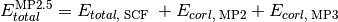

Python Driver¶
pubchem¶
Queries the PubChem database using a compound name (i.e. 1,3,5-hexatriene) to obtain a molecule string that can be passed to Molecule.
results = getPubChemObj("1,3,5-hexatriene")
Results is an array of results from PubChem matches to your query.
for entry in results:
entry["CID"] => PubChem compound identifer
entry["IUPAC"] => IUPAC name for the resulting compound
entry["PubChemObj"] => instance of PubChemObj for this compound
entry["PubChemObj"].getMoleculeString() => returns a string compatible
with PSI4's Molecule creation
psiexceptions¶
Module with non-generic exceptions classes.
frac¶
molutil¶
Module with utility functions that act on molecule objects.
- extract_cluster_indexing(mol, cluster_size=0)[source]¶
Function to returns a LIST of all subclusters of the molecule mol of real size cluster_size. If cluster_size = 0, returns all possible combinations of cluster size.
- extract_clusters(mol, ghost=True, cluster_size=0)[source]¶
Function to return all subclusters of the molecule mol of real size cluster_size and all other atoms ghosted if ghost equals true, all other atoms discarded if ghost is false. If cluster_size = 0, returns all possible combinations of cluster size.
proc¶
Module with functions that encode the sequence of PSI module calls for each of the name values of the energy(), optimize(), response(), and frequency() function.
- run_adc(name, **kwargs)[source]¶
Function encoding sequence of PSI module calls for an algebraic diagrammatic construction calculation.
Caution
Get rid of active molecule lines- should be handled in energy.
- run_bccd(name, **kwargs)[source]¶
Function encoding sequence of PSI module calls for a Brueckner CCD calculation.
- run_bccd_t(name, **kwargs)[source]¶
Function encoding sequence of PSI module calls for a Brueckner CCD(T) calculation.
- run_cc_gradient(name, **kwargs)[source]¶
Function encoding sequence of PSI module calls for a CCSD and CCSD(T) gradient calculation.
- run_cc_property(name, **kwargs)[source]¶
Function encoding sequence of PSI module calls for all CC property calculations.
- run_ccenergy(name, **kwargs)[source]¶
Function encoding sequence of PSI module calls for a CCSD, CC2, and CC3 calculation.
- run_dcft(name, **kwargs)[source]¶
Function encoding sequence of PSI module calls for a density cumulant functional theory calculation.
- run_dcft_gradient(name, **kwargs)[source]¶
Function encoding sequence of PSI module calls for DCFT gradient calculation.
- run_detci(name, **kwargs)[source]¶
Function encoding sequence of PSI module calls for a configuration interaction calculation, namely FCI, CIn, MPn, and ZAPTn.
- run_dfmp2(name, **kwargs)[source]¶
Function encoding sequence of PSI module calls for a density-fitted MP2 calculation.
Caution
Get rid of madness-era restart file
- run_dft(name, **kwargs)[source]¶
Function encoding sequence of PSI module calls for a density-functional-theory calculation.
- run_dft_gradient(name, **kwargs)[source]¶
Function encoding sequence of PSI module calls for a density-functional-theory gradient calculation.
- run_eom_cc(name, **kwargs)[source]¶
Function encoding sequence of PSI module calls for an EOM-CC calculation, namely EOM-CC2, EOM-CCSD, and EOM-CC3.
- run_eom_cc_gradient(name, **kwargs)[source]¶
Function encoding sequence of PSI module calls for an EOM-CCSD gradient calculation.
- run_libfock(name, **kwargs)[source]¶
Function encoding sequence of PSI module calls for a calculation through libfock, namely RCPHF, RCIS, RTDHF, RTDA, and RTDDFT.
- run_mcscf(name, **kwargs)[source]¶
Function encoding sequence of PSI module calls for a multiconfigurational self-consistent-field calculation.
- run_mp2(name, **kwargs)[source]¶
Function encoding sequence of PSI module calls for a MP2 calculation.
- run_mp2_gradient(name, **kwargs)[source]¶
Function encoding sequence of PSI module calls for a MP2 gradient calculation.
- run_mp2c(name, **kwargs)[source]¶
Function encoding sequence of PSI module calls for a coupled MP2 calculation.
- run_mrcc(name, **kwargs)[source]¶
Function that prepares environment and input files for a calculation calling Kallay’s MRCC code.
- run_omp2(name, **kwargs)[source]¶
Function encoding sequence of PSI module calls for an orbital-optimized MP2 computation
- run_psimrcc(name, **kwargs)[source]¶
Function encoding sequence of PSI module calls for a PSIMRCC computation using a reference from the MCSCF module
- run_psimrcc_scf(name, **kwargs)[source]¶
Function encoding sequence of PSI module calls for a PSIMRCC computation using a reference from the SCF module
- run_sapt(name, **kwargs)[source]¶
Function encoding sequence of PSI module calls for a SAPT calculation of any level.
- run_sapt_ct(name, **kwargs)[source]¶
Function encoding sequence of PSI module calls for a charge-transfer SAPT calcuation of any level.
- run_scf(name, **kwargs)[source]¶
Function encoding sequence of PSI module calls for a self-consistent-field theory (HF & DFT) calculation.
procutil¶
Module with utility functions used by several Python functions.
- drop_duplicates(seq)[source]¶
Function that given an array seq, returns an array without any duplicate entries. There is no guarantee of which duplicate entry is dropped.
- format_kwargs_for_input(filename, lmode=1, **kwargs)[source]¶
Function to pickle to file filename the options dictionary kwargs. Mode lmode =2 pickles appropriate settings for reap mode. Used to capture Python options information for distributed (sow/reap) input files.
- format_molecule_for_input(mol)[source]¶
Function to return a string of the output of input.process_input() applied to the XYZ format of molecule mol. Used to capture molecule information for distributed (sow/reap) input files.
- format_options_for_input()[source]¶
Function to return a string of commands to replicate the current state of user-modified options. Used to capture C++ options information for distributed (sow/reap) input files.
Caution
Some features are not yet implemented. Buy a developer a coffee.
- Does not cover local (as opposed to global) options.
- Does not work with array-type options.
driver¶
Module with a procedures dictionary specifying available quantum chemical methods and functions driving the main quantum chemical functionality, namely single-point energies, geometry optimizations, properties, and vibrational frequency calculations.
- gradient(name, **kwargs)[source]¶
Function complementary to optimize(). Carries out one gradient pass, deciding analytic or finite difference.
- hessian(name, **kwargs)[source]¶
Function to compute force constants. Presently identical to frequency().
physconst¶
# Do not modify this file! It is auto-generated by the document_options_and_tests
# script, from psi4topdir/include/physconst.h
psi_h = 6.62606896E-34 # The Planck constant (Js)
psi_c = 2.99792458E8 # Speed of light (ms$^{-1}$)
psi_kb = 1.3806504E-23 # The Boltzmann constant (JK$^{-1}$)
psi_R = 8.314472 # Universal gas constant (JK$^{-1}$mol$^{-1}$)
psi_bohr2angstroms = 0.52917720859 # Bohr to Angstroms conversion factor
psi_bohr2m = 0.52917720859E-10 # Bohr to meters conversion factor
psi_bohr2cm = 0.52917720859E-8 # Bohr to centimeters conversion factor
psi_amu2g = 1.660538782E-24 # Atomic mass units to grams conversion factor
psi_amu2kg = 1.660538782E-27 # Atomic mass units to kg conversion factor
psi_au2amu = 5.485799097E-4 # Atomic units (m$@@e$) to atomic mass units conversion factor
psi_hartree2J = 4.359744E-18 # Hartree to joule conversion factor
psi_hartree2aJ = 4.359744 # Hartree to attojoule (10$^{-18}$J) conversion factor
psi_cal2J = 4.184 # Calorie to joule conversion factor
psi_dipmom_au2si = 8.47835281E-30 # Atomic units to SI units (Cm) conversion factor for dipoles
psi_dipmom_au2debye = 2.54174623 # Atomic units to Debye conversion factor for dipoles
psi_dipmom_debye2si = 3.335640952E-30 # Debye to SI units (Cm) conversion factor for dipoles
psi_c_au = 137.035999679 # Speed of light in atomic units
psi_hartree2ev = 27.21138 # Hartree to eV conversion factor
psi_hartree2wavenumbers = 219474.6 # Hartree to cm$^{-1}$ conversion factor
psi_hartree2kcalmol = 627.5095 # Hartree to kcal mol$^{-1}$ conversion factor
psi_hartree2MHz = 6.579684E9 # Hartree to MHz conversion factor
psi_kcalmol2wavenumbers = 349.7551 # kcal mol$^{-1}$ to cm$^{-1}$ conversion factor
psi_e0 = 8.854187817E-12 # Vacuum permittivity (Fm$^{-1}$)
psi_na = 6.02214179E23 # Avagadro's number
psi_me = 9.10938215E-31 # Electron rest mass (in kg)
wrappers¶
Module with functions that call the four main driver functions: driver.energy, driver.optimize, driver.response, and driver.frequency.
- auto_fragments(name, **kwargs)[source]¶
Detects fragments if the user does not supply them. Currently only used for the WebMO implementation of SAPT
usage: auto_fragments(‘’)
- call_function_in_1st_argument(funcarg, **largs)[source]¶
Function to make primary function call to energy(), opt(), etc. with options dictionary largs. Useful when funcarg to call is stored in variable.
- reconstitute_bracketed_basis(needarray)[source]¶
Function to reform a bracketed basis set string from a sequential series of basis sets (e.g, form ‘cc-pv[q5]z’ from array [cc-pvqz, cc-pv5z]). The basis set array is extracted from the f_basis field of a NEED dictionary in complete_basis_set(). Result is used to print a nicely formatted basis set string in the results table.
- split_menial(menial)[source]¶
Function used by complete_basis_set() to separate menial ‘scftot’ into [scf, tot] and ‘mp2corl’ into [mp2, corl].
- tblhead(tbl_maxrgt, tbl_delimit, ttype)[source]¶
Function that prints the header for the changable-width results tables in db(). tbl_maxrgt is the number of reagent columns the table must plan for. tbl_delimit is a string of dashes of the correct length to set off the table. ttype is 1 for tables comparing the computed values to the reference or 2 for simple tabulation and sum of the computed values.
- validate_bracketed_basis(basisstring)[source]¶
Function to transform and validate basis sets for cbs(). A basis set with no paired square brackets is passed through with zeta level 0 (e.g., ‘6-31+G(d,p)’ is returned as [6-31+G(d,p)] and [0]). A basis set with square brackets is checked for sensible sequence and Dunning-ness and returned as separate basis sets (e.g., ‘cc-pV[Q5]Z’ is returned as [cc-pVQZ, cc-pV5Z] and [4, 5]). Note that this function has no communication with the basis set library to check if the basis actually exists. Used by complete_basis_set().
- validate_scheme_args(functionname, **largs)[source]¶
Function called by each extrapolation scheme in complete_basis_set(). Checks that all the input arguments are present and suitable so that the scheme function can focus on defining the extrapolation.
qmmm¶
Module with classes to integrate MM charges into a QM calculation.
functional¶
Module to provide lightweight definitions of functionals and SuperFunctionals
text¶
Module with utility classes and functions related to data tables and text.
- class Table(rows=(), row_label_width=10, row_label_precision=4, cols=(), width=16, precision=10)[source]¶
Class defining a flexible Table object for storing data.
Function to print text to output file in a banner of minimum width width and minimum three-line height for type = 1 or one-line height for type = 2.
util¶
Module with utility functions for use in input files.
- compare_integers(expected, computed, label)[source]¶
Function to compare two integers. Prints util.success() when value computed matches value expected. Performs a system exit on failure. Used in input files in the test suite.
- compare_matrices(expected, computed, digits, label)[source]¶
Function to compare two matrices. Prints util.success() when elements of matrix computed match elements of matrix expected to number of digits. Performs a system exit on failure to match symmetry structure, dimensions, or element values. Used in input files in the test suite.
- compare_strings(expected, computed, label)[source]¶
Function to compare two strings. Prints util.success() when string computed exactly matches string expected. Performs a system exit on failure. Used in input files in the test suite.
- compare_values(expected, computed, digits, label)[source]¶
Function to compare two values. Prints util.success() when value computed matches value expected to number of digits. Performs a system exit on failure. Used in input files in the test suite.
- compare_vectors(expected, computed, digits, label)[source]¶
Function to compare two vectors. Prints util.success() when elements of vector computed match elements of vector expected to number of digits. Performs a system exit on failure to match symmetry structure, dimension, or element values. Used in input files in the test suite.
- copy_file_from_scratch(filename, prefix, namespace, unit, move=False)[source]¶
Function to move file out of scratch with correct naming convention.
Arguments:
@arg filename full path to target file @arg prefix computation prefix, usually ‘psi’ @arg namespace context namespace, usually molecule name @arg unit unit number, e.g. 32 @arg move copy or move? (default copy)
Example:
Assume PID is 12345 and SCRATCH is /scratch/parrish/
- copy_file_to_scratch(‘temp’, ‘psi’, ‘h2o’, 32):
- -cp /scratch/parrish/psi.12345.h2o.32 .temp
- copy_file_to_scratch(‘/tmp/temp’, ‘psi’, ‘h2o’, 32):
- -cp /scratch/parrish/psi.12345.h2o.32 /tmp/temp
- copy_file_to_scratch(‘/tmp/temp’, ‘psi’, ‘’, 32):
- -cp /scratch/parrish/psi.12345.32 /tmp/temp
- copy_file_to_scratch(‘/tmp/temp’, ‘psi’, ‘’, 32, True):
- -mv /scratch/parrish/psi.12345.32 /tmp/temp
- copy_file_to_scratch(filename, prefix, namespace, unit, move=False)[source]¶
Function to move file into scratch with correct naming convention.
Arguments:
@arg filename full path to file @arg prefix computation prefix, usually ‘psi’ @arg namespace context namespace, usually molecule name @arg unit unit number, e.g. 32 @arg move copy or move? (default copy)
Example:
Assume PID is 12345 and SCRATCH is /scratch/parrish/
- copy_file_to_scratch(‘temp’, ‘psi’, ‘h2o’, 32):
- -cp ./temp /scratch/parrish/psi.12345.h2o.32
- copy_file_to_scratch(‘/tmp/temp’, ‘psi’, ‘h2o’, 32):
- -cp /tmp/temp /scratch/parrish/psi.12345.h2o.32
- copy_file_to_scratch(‘/tmp/temp’, ‘psi’, ‘’, 32):
- -cp /tmp/temp /scratch/parrish/psi.12345.32
- copy_file_to_scratch(‘/tmp/temp’, ‘psi’, ‘’, 32, True):
- -mv /tmp/temp /scratch/parrish/psi.12345.32
- success(label)[source]¶
Function to print a ‘label...PASSED’ line to screen. Used by util.compare_values() family when functions pass.
aliases¶
Module with functions that call upon those in modules proc, driver, and wrappers.
- Place in this file quickly defined procedures such as
- aliases for complex methods
- simple modifications to existing methods
- run_mp2_5(name, **kwargs)[source]¶
Function that computes MP2.5 energy from results of a DETCI MP3 calculation.

Psi variables: >>> energy('mp2.5')
- run_plugin_omega(name, **kwargs)[source]¶
Function encoding sequence of PSI module and plugin calls, as well as typical options, to access Rob Parrish’s omega plugin.
>>> energy('plugin_omega')
- sherrillgroup_gold_standard(name='mp2', **kwargs)[source]¶
Function to call the quantum chemical method known as ‘Gold Standard’ in the Sherrill group. Uses complete_basis_set() to evaluateo the following expression. Two-point extrapolation of the correlation energy performed according to corl_xtpl_helgaker_2().
![E_{total}^{\text{Au\_std}} = E_{total,\; \text{SCF}}^{\text{aug-cc-pVQZ}} \; + E_{corl,\; \text{MP2}}^{\text{aug-cc-pV[TQ]Z}} \; + \delta_{\text{MP2}}^{\text{CCSD(T)}}\big\vert_{\text{aug-cc-pVTZ}}](_images/math/4633e65e7989d388aa3eaf4c2a0163a8603d06db.png)
>>> energy('sherrillgroup_gold_standard')